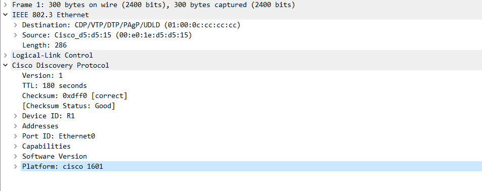
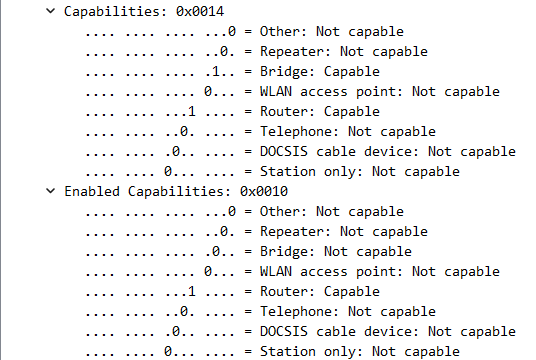
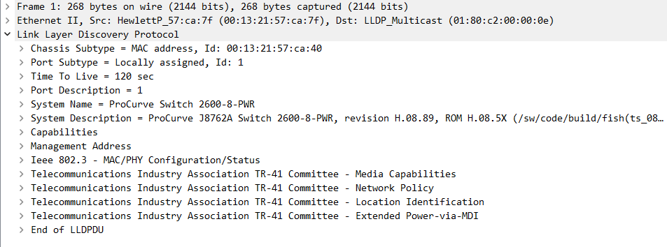

A
B
C
D
Představte si, že nastupujete na novou pracovní pozici jako síťař. Během prvního dne zjistíte, že váš předchůdce vůbec nezdokumentoval síť a vy absolutně netušíte, jak si představit topologii sítě.
Existuje nějaká skupina protokolů, která by mu alespoň mohla pomoci zmapovat topologii sítě?
Ano, existuje. Protokoly, které nám dokážou přinést určité informace o síti nazýváme celkově jako Discovery protokoly.
Tyto protokoly jsou skvělý v tom, že fungují na L2 (Data-link layer), tudíž ke svému fungování nepotřebují IP adresu.
V rámci CCNA úrovně se budeme bavit primárně o dvou discovery protokolech, se kterýma se můžete během studia i práce setkat.
Těmito protokoly jsou CDP (Cisco Discovery Protocol) a LLDP (Link Layer Discovery Protocol).
Oba tyto protokoly jsou založené na stejných principech a liší se spíše v drobnostech, které si představíme později.
Jestliže spustíte nově koupený switch od Cisca, tak budete mít standardně zapnutý CDP protokol. Pakliže budete mít těchto switchů více a vzájemně je propojíte, začnou se vždy mezi sousedními zařízeními (pozn. CDP rámec se nepošle dál než na sousední zařízení) posílat periodicky CDP rámce, která nesou určité informace o daném zařízení a konfigurace na něm nastavené.
Mezi získané informace může patřit:
Discovery protokoly nejsou chráněny žádným obraným mechanismem, proto je třeba si dát velký pozor na to, kde jsou nakonfigurovaný. Potenciální útočník by totiž mohl tyto informace získané prostřednictvím discovery protokolů využít v náš neprospěch.
Obecně je doporučeno vypínat discovery protokoly na interfacích, které se připojují k hostům či do externí sítě.
CDP nebo-li Cisco Discovery Protocol, je proprietární protokol společnosti Cisco vytvořený v devadésátých letech minulého století. Kromě Cisca jej využívají také některá zařízení od HP.
Jak už je psáno výše, CDP patří do kategorie discovery protokolů, jejichž účelem je sdílet informace mezi sousedními zařízeními.
Za celou dobu má CDP pouze 2 verze -
CDP zprávy používají cílovou MAC adresu: 01:00:0C:CC:CC:CC.
Jak vidíte, tento CDP rámec dává informace sousednímu zařízení.
Celkově z tohoto rámce můžeme vyčíst následujicí informace:
Pro porovnání sem dávám i CDPv1 rámec:
CDP je na cisco zařízeních standardně zapnuto na všech portech. Kdyby se nám však stalo, že by bylo z nějakého důvodu vyplé, můžeme jej globálně povolit na všech portech pomocí příkazu:
SW(config)#cdp run
Budeme-li pak chtít individuálně zapnout/vypnout CDP na vybraném portu, uděláme to pomocí příkazu:
SW(config-if)#no cdp enable
Budeme-li si chtít zkontrolovat nastavení CDP (to zda běží, verzi, interval posílání zpráv, holdtime - za jak dlouho se budou informáce bez další výměny zpráv vymazány), použijeme příkaz:
SW#show cdp
Global CDP information:
Sending CDP packets every 60 seconds
ending a holdtime value of 180 seconds
Sending CDPv2 advertisements is enabled
Další příkazy pak v různé míře slouží k výpisu informací o sousedním zařízením -
SW#show cdp neighbors Capability Codes: R - Router, T - Trans Bridge, B - Source Route Bridge S - Switch, H - Host, I - IGMP, r - Repeater, P - Phone, D - Remote, C - CVTA, M - Two-port Mac Relay Device ID Local Intrfce Holdtme Capability Platform Port ID Switch Gig 0/0 161 R S I Gig 0/0 R2 Gig 1/0 167 R 7206VXR Gig 0/0
Příkaz show cdp neighbors vám vypíše základní informace o sousedních zařízení jako třeba - název zařízení, local interface, holdtime, port id a čeho je zařízení schopné (směrování, přepínání atd.)
Pro podrobnější informace o sousedních zařízeních můžeme použít příkazy -
SW#show cdp entry * SW#show cdp neighbors detail
Oba tyto příkazy mají stejný výstup.
Budeme-li pak potřebovat zjistit informace pouze o jednom sousedovi, tak můžeme použít příkaz:
SW#show cdp neighbors {interface}
Nakonec tu máme ještě jeden takový techničtější příkaz, který nám umožní zjistit, kolik cdp paketů jsme poslali, kolik jsme jich obdrželi a jaké verze CDP používáme -
SW#show cdp traffic
Užití CDP si můžete vyzkoušet zde.
CDP spoofing DoS útok, pomocí kterého můžeme přetížit zařízení na kterém je zapnuté CDP.
Princip CDP spoofing útoku je následujicí:
Útočník začne na zařízení se zapnutým CDP posílat zprávy s několika vymyšlenýma MAC adresama na MAC adresu příjemce 01:00:0C:CC:CC:CC. Oběť si díky těmto CDP rámců začne budovat CDP tabulku a pod náporem nových CDP zpráv dojde k přetížení oběti systému.
Ochranou proti tomuto útoku je mít CDP vypnuté na portech, která jsou připojená k externím zařízením.
LLDP (Link Layer Discovery Protocol) je IEEE standardizovaný protokol (802.1AB), který umožní zařízení sdílet informace o sobě svým sousedům.
Funguje podobně jako CDP. Jedna z největších změn oproti CDP je ta, že LLDP nám umožňuje povolit sdílení informací pouze v jednom směru (to znamená, že zařízení bude moci například pouze přijímat informace o sousedních zařízení, ale samo je nikam sdílet nebude.).
LLDP se pak dále s CDP dále liší zejména ve výstupu.
LLDP se posílá na cílovou MAC adresu 01:80:C2:00:00:0E.
LLDP MED, nebo-li také LLDP for Media Endpoint Devices je rozšíření LLDP protokolu, které rozšiřuje LLDP zprávy o informace spojené zéjména s VoIP.
V porovnání s CDP to na první pohled může působit jak španělská vesnice. Nicméně valná část informací je ve skutečnosti stejná jako u CDP.
Tato LLDP zpráva nám dává informace o:
*V porovnání s CDP dostáváme od LLDP kromě té informace, čeho je zařízení způsobilé (aneb co může dělat), také tu informaci co z toho aktuálně dělá, viz. obrázek níže.
Pro porovnání s klasickou LLDP zprávou sem také pro ukázku dávám LLDP-MED zprávu. Ta oproti klasické zprávě obsahuje i Telecommunication Industry Association TR Comittie informace.
To zda je LLDP standardně vypnuto či zapnuto záleží na daném zařízení. Pro to abychom zjistili zda je LLDP na zařízení vypnuté či zapnuté použijeme příkaz:
SW#show lldp
Jestliže LLDP zapnuté není, můžeme jej aktivovat buď globálně nebo individuálně na jednotlivých portech -
Pro zapnutí LLDP globálně použijeme příkaz:
SW(config)#lldp run
Pro umožnění posílání a přijetí LLDP zpráv použijeme příkaz:
SW(config)#lldp {transmit | receive }
Nyní když již máme LLDP nasteveno, se můžeme podívat na informace o sousedních zařízeních!
Stejně jako u CDP máme příkazy s obecnými a s podrobnějšími informacemi.
Pro obecný informace o sousedech využijeme příkaz:
SW#show lldp neighbors
Další, podrobnější informace získáme pomocí příkazů:
SW#show lldp neighbors detail
SW#show lldp entry *
Opět nám tyto dva příkazy poskytnou stejný výstup.
Pakliže bychom si chtěli zobrazit získané informace specifického souseda, tak použijeme příkaz:
SW#show lldp neighbors {interface}
Nakonec tu stejně jako u CDP máme poněkud techničtější příkaz, který nám poskytuje statistiku přenesených LLDP paketů.
SW#show lldp traffic
Užití LLDP si můžete vyzkoušet zde.
| Příkazy | Popis | Mód |
|---|---|---|
| cdp run | Aktivuje globálně CDP | Global Config |
| lldp run | Globálně spustí LLDP | Global Config |
| cdp enable | Zapne na portu CDP | Interface |
| lldp transmit | Aktivuje na portu posílání LLDP zpráv | Interface |
| lldp receive | Umožní na portu přijímat LLDP zprávy | Interface |
| show cdp | Vypsání stavu a atributů CDP | Priviledged EXEC |
| show lldp | Zobrazení stavu a vlastností LLDP | Priviledged EXEC |
| show cdp traffic | Vypíše statistiku přenesených CDP zpráv | Priviledged EXEC |
| show lldp traffic | Vypíše statistiku přenesených LLDP zpráv | Priviledged EXEC |
| show cdp neighbors {*interface} **detail | Vypíše (**podrobně) informace o sousedních (*sousedním) zařízeních zjištěné pomocí CDP | Priviledged EXEC |
| show lldp neighbors {*interface} **detail | Vypíše (**podrobně) informace o sousedních (*sousedním) zařízeních zjištěné díky LLDP | Priviledged EXEC |
| show cdp entry {název | *} | Zobrazí základní informace o sousedních zařízeních zjištěné prostřednictvím CDP | Priviledged EXEC |
| show lldp entry {název | *} | Vypíše základní informace o sousedních zařízeních zjištěné za pomoci LLDP | Priviledged EXEC |
Discovery protokoly nám v případě potřeby pomůžou zjistit informace o sousedních zařízeních. Toho se v dnešní době používá při zmapovávání sítě (například v rámci Cisco ACI).
Discovery protokoly fungují na L2 a jejich zprávy nejsou směrovatelné. Jsou založeny na tom principu, že na těch interfacích, kde byly nastaveny, jsou periodicky posílané zprávy s informacemi o daném zařízení.
Pro CCNA úroveň je důležité znát CDP a LLDP. Ačkoliv jsou si tyto dva protokoly na první pohled podobny, je mezi nima pár významných odlišností jako třeba v podpoře na jednotlivých zařízeních (CDP je Cisco proprietární, tudíž jej hlavně najdeme na Cisco zařízeních X LLDP je IEEE standardizovaný), způsob zapnutí (možnost jednotlivě zapnout/vypnout přenos a přijimání LLDP zpráv X CDP celkové zapínání/vypínání přenosu zpráv) a v jednotlivých informacích (u CDP například můžeme oproti LLDP zjistit informace o VTP doméně, native VLAN a duplexu).
Přestože nám discovery protokoly pomáhají, jsou pro nás zároveň i potenciální bezpečnostní hrozbou, proto vždy zvažte, zda je nutné mít tyto protokoly na portu zapnuté.
A
B
C
D